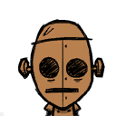
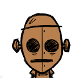
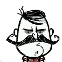
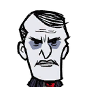
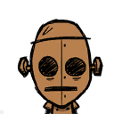
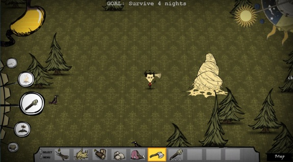

Characters


 




The Gentleman Scientist
"I will conquer it all with the power of my MIND!"
* Grows a magnificient beard

Don’t Starve is an open world survival video game developed by the Canadian indie company Klei Entertainment. The game follows a scientist named Wilson who finds himself in a dark, dreary world and must survive as long as possible. To this end, the player must keep Wilson healthy, fed, and mentally stable as he avoids a variety of surreal and supernatural enemies that will try to kill and devour him. The game’s Adventure mode adds depth to the sparse plot and pits Wilson against the game’s antagonist, Maxwell.
Don’t Starve is an action-adventure game with a randomly generated open world and elements of survival and rogue-like gameplay. Wilson, the protagonist, is the default playable character, unlocked upon purchase of the game, however, more characters are unlocked the longer you survive and the more you explore.
The goal is to survive as long as possible, and a count of the number of days the player has survived is shown onscreen. The game keeps few records of player progress with the total number of experience points gained and the playable characters unlocked. The player earns 20 experience points each in-game day and receives them after dying. As is common among rogue-likes, death is permanent, barring the use of several rare or expensive items like the Meat Effigy, TouchStone, and Life-Giving Amulet.
The game relies on a day/night cycle that causes meaningful fluctuations in gameplay style. During the day, the player spends most of their time exploring the world: gathering food, firewood, and other resources, discovering crafting recipes to combine available items, and avoiding enemies. With nightfall comes dangerous monsters and an invisible menace, Charlie, who attacks the player when the screen is dark. A player must have a light source or night vision to prevent Charlie from attacking. Crafting from recipes allows the player to build shelter, weapons, and tools like axes. Players can forage and farm plants as well as hunt animals for sustenance, with several characters having dietary perks or restrictions. Food can spoil, however, so the player cannot keep it for too long.
Death can occur in a variety of ways. The player has three gauges displayed on the game’s head-up display, which respectively track hunger, health, and sanity. Hunger worsens by default, being replenished with food. Sanity decreases during the dusk and night or as a result of specific unpleasant actions, such as robbing graves or fighting monsters; it can be replenished through mentally stimulating activities, such as sleeping, picking flowers, and wearing fashionable clothing. When hunger gets too low, it begins to chip away at health, which will eventually result in the player’s death. A large variety of creatures can attack the player, including giant one-eyed birds, tree monsters, tentacles, and even small frogs will nonetheless try to accost the player and steal from them. Additionally, at low enough sanity, figments of the character’s imagination become corporeal and able to attack the player. Some creatures, such as pig-like creatures often found in tribes, begin as neutral to the player, but the player’s actions may lead them to be allies or hostile foes.

* Grows a magnificient beard
Don’t Starve was developed and published by indie studio Klei Entertainment. The game began development as part of a 48-hour game jam in 2010. The team liked the idea but shelved it until two years later, when they had the time to flesh it out. Full development commenced in 2012. This was during the heat of an industry trend of creating games in which players are dropped into a world with few instructions and a goal of survival. The torch of this movement was held by the 2011 sandbox game Minecraft. Member Kevin Forbes stated in an interview that Minecraft was one of the team’s biggest influences, particularly its exploration elements. However, as the game was conceived as a “weird experiment,” the team’s main goal was to innovate in terms of gameplay and aesthetics, specifically by adding a layer of emphasis on characterization and themes.

The game’s dark and supernatural yet cartoonish art style was influenced by the work of filmmaker Tim Burton, to which it has been frequently compared to, and by writers Edward Gorey and H.P. Lovecraft. Forbes noted the team’s ambition of creating something “dark and creepy.” After conception of the basic game setup, Forbes penned a backstory influenced by steampunk and horror, and lead creative director Jeff Agala added comic strip-like art elements. To further the game’s atmosphere of loneliness and directionlessness, Klei decided firmly against multiplayer gameplay. However, in December 2014, after numerous requests, Klei finally released the multiplayer version of the game titled “Don’t Starve Together” on Steam Early Access after an initial closed beta release.
If you found Don’t Starve interesting, check out Klei Entertainment’s website to learn more and/or purchase the game! You can also check out the downloadable content for Don’t Starve - Reign of Giants, Shipwrecked, and Hamlet. Additionally, if you want to survive and share the game with friends, be sure to check out Don’t Starve Together!